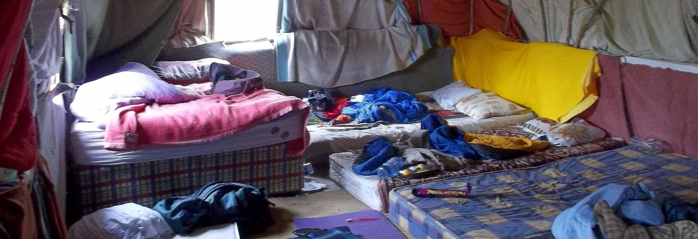

Protégez les choses les plus vitales pour votre survie tout en préparant non seulement la panne de la société civile, mais aussi l'imposition possible de contre-mesures extrêmes par le gouvernement, les pénuries alimentaires, la dégradation de l'infrastructure, l'exode urbain en raison de l'épidémie, la peste, la perturbation du terrorisme, en raison du nucléaire et Contamination chimique, etc. Et surtout n'oubliez pas : "ne mettez pas tous vos oeufs dans le même panier".
Cette moto légère et rapide sera votre véhicule préféré pour quitter la ville quand les choses tourneront mal. Equipée d'une corde, d'une hache ainsi que d'une arbalète positionnée à l'arrière, vous serez rapide et bien protégé.
Elément indispensable en cas de pépin et utile dans de nombreuses situations. Très pratique pour descendre d'une fenêtre ou grimper sur un toît.
Ce sac à dos solide robuste est très pratique avec ses nombreuses poches et rangements.Ce sac est conçu pour résister dans les situations les plus délicates et il resistera aux frottements grâce à son tissu dernier cri. Impossible de s'en passer pour ranger son matériel de survie.
Voici l'accessoire simple et peu couteux qui peut vous tirer de situations très inconfortables. On ne fera pas attention au look de l'objet, en temps de crise vous allez préférer l'efficacité à la mode.
On va pas se mentir, tous les films (de zombie) la présente comme l'outil de défence ultime.
Détrompez-vous, cet objet n'est pas le dernier hand spinner à la mode. Il va plutôt vous servir à faire des noeuds solides pour votre tente par exemple. Ça n'a pas de prix.
La photo parle d'elle même. Avec ce véhicule vous êtes le roi du nouveau monde, totalement protégé (le véhicule est blindé) sur les routes dangereuses des villes en train de sombrer dans le chaos.
Un appartement au sein de ce bunker dernier cri est inaccessible (sauf si vous êtes un patron de la Bay Area). Inutile de vous dire qu'en cas de fin du monde, l'endroit tout confort le plus vivable sera là-bas.
Votre nouvelle habitation est rudimentaire et assez fragile. Il va falloir vous habituer à l'idée qu'en cas de fin du monde, le camping sauvage sera une de vos principales activtés.
Durant votre survie en milieu hostile vous n'aurez pas beaucoup de temps pour vous détendre. Emporter avec vous votre hand spinner, c'est pas lourd et ça fonctionne sans électricité.
Oubliez la boussole de votre iPhone, en mode survie il va falloir revenir aux sources. Et une bonne boussole militaire, il n'y a rien de mieux pour retrouver son campement.
Voir la nuit deviendra une préoccupation capitale, pour éviter un danger (est-ce un animal inoffensif qui rôde autour de ma tente ?) ou aller au petit coin. Ce modèle est petit et robuste, à garder dans sa poche le jour et la nuit.
Un accessoire de base. Autant vous dire que votre pantalon a intérêt à être d'excellente qualité. C'est le cas de celui-ci.
Vous ne serez sûrement pas seul face aux événements, alors autant se faire des alliés et échanger avec eux à distance.
Un peu lourd et incombrant au départ, vous allez vite comprendre l'intérêt de prendre cette réserve d'eau avec vous. Une source potentielle de conflit avec d'autres survivants, donc faites bien attention à vous.
Ils vont vous être très utilse pour vous organiser et attacher des accessoires à votre sac.
Ces jumelles high-tech sont incroyables : zoom x12, enregistrement full HD, résistant à l'eau... À vous de voir.